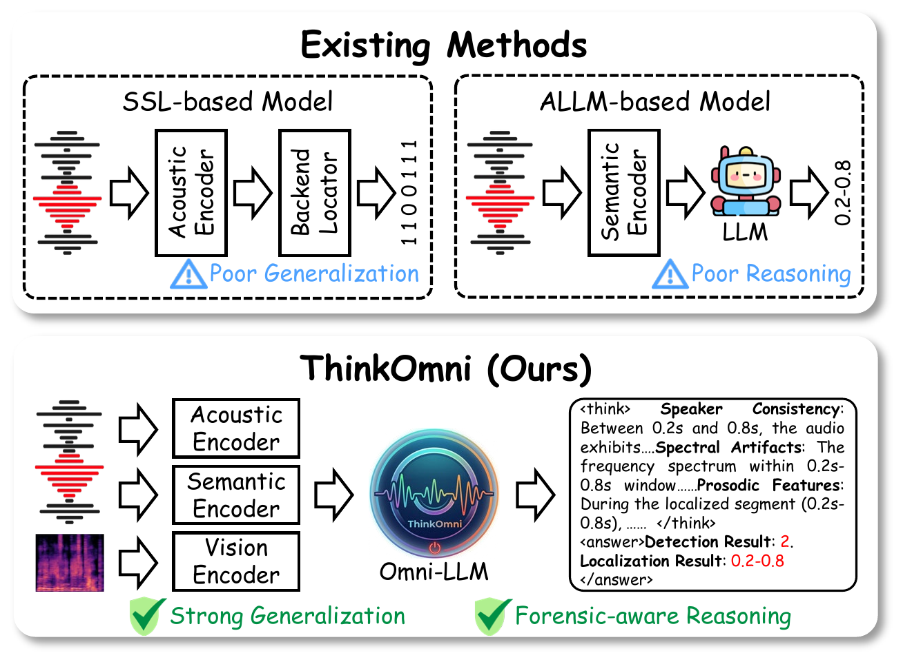
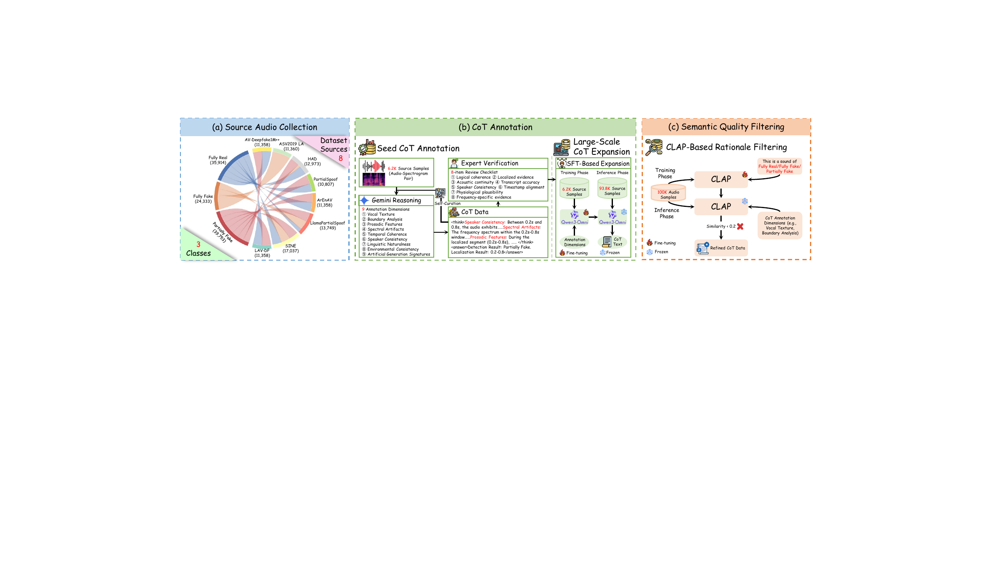
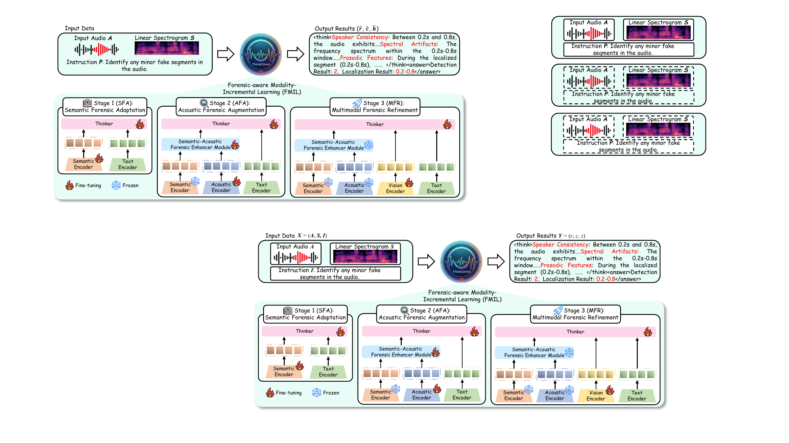
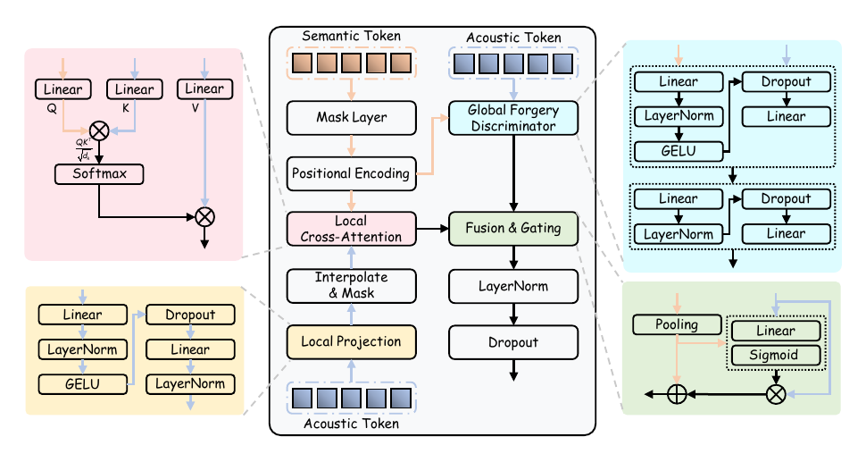
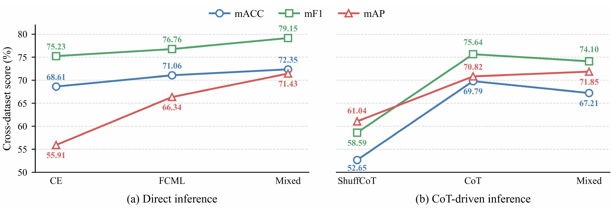

01
Semantic Forensic Adaptation (SFA)
Establish transferable semantic reasoning from speech content and speaker information.
A Reasoning-Driven Omni-Modal LLM Framework for Audio Forgery Detection and Localization
Accepted to ACM MM 2026
Shenzhen University · Afirstsoft Technology Group Co., Ltd.
From implicit prediction
Existing audio forgery detection and localization methods often overfit dataset-specific low-level artifacts, limiting their generalization to subtle, localized, and unseen manipulations.
ThinkOmni jointly performs explicit forensic reasoning, spoofing detection, and temporal manipulation localization. It connects semantic inconsistencies, acoustic artifacts, and spectral-visual evidence with the detection and localization targets instead of relying only on implicit latent correlations.

Can audio forgery detection and localization benefit from explicit forensic reasoning beyond implicit low-level features?
Generate explicit forensic reasoning from semantic, acoustic, and spectral-visual evidence.
Classify audio as fully real, fully fake, or partially fake.
Predict one or more temporal intervals corresponding to manipulated segments.
Forensic-Aware Chain-of-Thought
A 100K-sample dataset with structured forensic evidence and reasoning annotations for explicit reasoning supervision.

100Kaudio samples
Structured forensic evidence and reasoning annotations.
8source datasets
19LA, HAD, PS, LAV-DF, ArEnAV, LPS, SINE, and AV-1M++.
3authenticity classes
Fully real, fully fake, and partially fake.
Method
Built on Qwen2.5-Omni, ThinkOmni progressively integrates semantic, acoustic, and spectral-visual representations while reducing interference among heterogeneous modalities.

Establish transferable semantic reasoning from speech content and speaker information.
Introduce fine-grained acoustic evidence to capture subtle manipulation artifacts.
Integrate spectrogram-based visual cues for cross-modal verification.
Semantic-Acoustic Forensic Enhancer (SAFE)
SAFE comprises a local cross-attention branch for fine-grained cue interaction and a global forgery discriminator for long-range forensic modeling. A learned gate fuses both views before the Thinker backbone.

Evaluation
ThinkOmni is evaluated on the eight FACoT source datasets and two held-out cross-dataset benchmarks under the protocol reported in the paper.
Cross-dataset evaluation
ADD 2023 Track 2 and Speech-Forensics are held out from training. ThinkOmni achieves 74.67% average mAP, exceeding the best SSL-based method by 43.73 points and the best ALLM-based method by 15.32 points.
mAP is averaged over temporal IoU thresholds from 0.5 to 0.95. Claims are limited to the two held-out benchmarks evaluated in the paper.

Qualitative analysis
Browse all 84 samples from 10 datasets. Each entry preserves the complete ThinkOmni response from its source TXT file without editing or truncation.
Citation
The paper is available on arXiv and has been accepted to ACM MM 2026.
@misc{xu2026thinkomni,
title = {ThinkOmni: A Reasoning-Driven Omni-Modal LLM Framework for Audio Forgery Detection and Localization},
author = {Yuxiong Xu and Kaiqing Lin and Bin Li and Haodong Li and Sheng Li},
year = {2026},
eprint = {2607.26553},
archivePrefix = {arXiv}
}